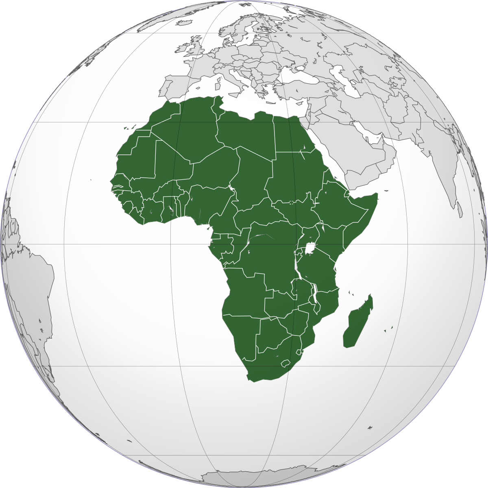
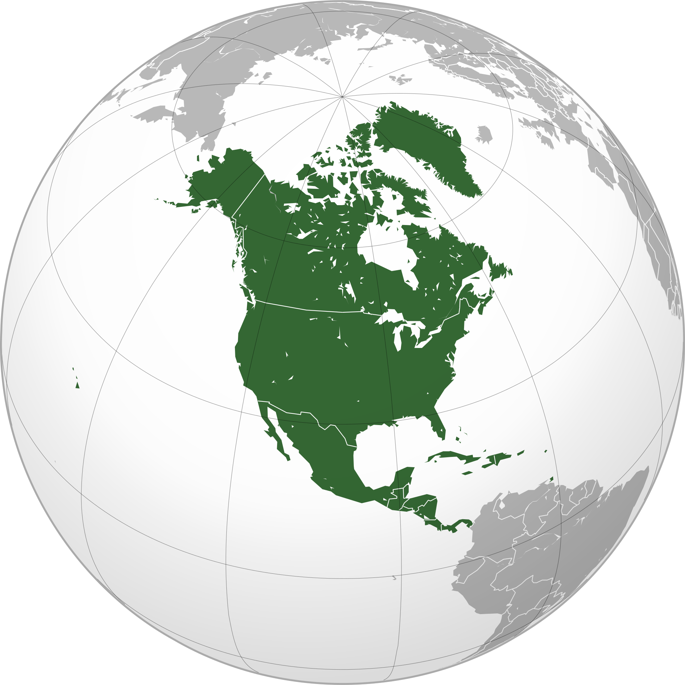
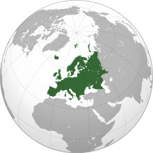
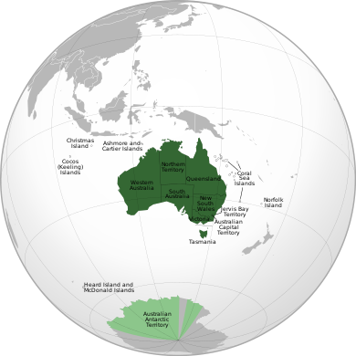

Disclaimer: The following webpage is created in one of the most popular earthly languages which is English. Beings from other planets or other solar systems are expected to have a slight knowledge of English
comprehension to further proceed with the webpage.
The planet Earth is subdivided into several landmasses called Continent. A continent is one of several large landmasses. Generally identified by convention rather than any strict criteria, up to seven regions
are commonly regarded as continents. Ordered from largest in the area to smallest, these seven regions are
Asia is Earth's largest and most populous continent, located primarily in the Eastern and Northern Hemispheres. It shares the continental landmass of Eurasia with the continent of Europe and the continental landmass
of Afro-Eurasia with both Europe and Africa. Asia covers an area of 44,579,000 square kilometers (17,212,000 sq mi), about 30% of Earth's total land area, and 8.7% of the Earth's total surface area. The continent, which
has long been home to the majority of the human population, was the site of many of the first civilizations. Asia is notable for not only its overall large size and population but also dense and large settlements, as well
as vast barely populated regions. Its 4.5 billion people (as of June 2019) constitute roughly 60% of the world's population.
In general terms, Asia is bounded on the east by the Pacific Ocean, on the south by the Indian Ocean, and on the north by the Arctic Ocean. The overland border of Asia with Europe is a historical and cultural construct,
as there is no clear physical and geographical separation between them. It is somewhat arbitrary and has moved since its first conception in classical antiquity. The most commonly accepted boundaries place Asia to the east
of the Suez Canal separating it from Africa; and to the east of the Turkish Straits, the Ural Mountains, and Ural River, and to the south of the Caucasus Mountains and the Caspian and Black Seas, separating it from Europe.
Africa

Fig.2 - Continent of Africa
Africa is the world's second-largest and second-most-populous continent, after Asia in both cases. At about 30.3 million km2 (11.7 million square miles) including adjacent islands, it covers 6% of Earth's total surface area
and 20% of its land area. With 1.3 billion people as of 2018, it accounts for about 16% of the world's human population. Africa's population is the youngest amongst all the continents; the median age in 2012 was 19.7 when
the worldwide median age was 30.4.
The continent is surrounded by the Mediterranean Sea to the north, the Isthmus of Suez and the Red Sea to the northeast, the Indian Ocean to the southeast, and the Atlantic Ocean to the west. The continent includes Madagascar
and various archipelagos. It contains 54 fully recognized sovereign states (countries), eight territories, and two de facto independent states with limited or no recognition.
North America

Fig.3 - Continent of North America
North America is a continent entirely within the Northern Hemisphere and almost all within the Western Hemisphere. It can also be described as the northern subcontinent of the Americas. It is bordered to the north by the Arctic Ocean,
to the east by the Atlantic Ocean, to the southeast by South America and the Caribbean Sea, and to the west and south by the Pacific Ocean. However, Greenland, because it is on the North American Tectonic Plate, is included as part of
North America geographically.
North America covers an area of about 24,709,000 square kilometers (9,540,000 square miles), about 16.5% of the Earth's land area and about 4.8% of its total surface. North America is the third-largest continent by area, following Asia
and Africa, and the fourth by population after Asia, Africa, and Europe. In 2013, its population was estimated at nearly 579 million people in 23 independent states, or about 7.5% of the world's population.
South America
Fig.4 - Continent of South America
South America is a continent entirely in the Western Hemisphere and mostly in the Southern Hemisphere, with a relatively small portion in the Northern Hemisphere. It can also be described as a southern subcontinent of the Americas.
The reference to South America instead of other regions (like Latin America or the Southern Cone) has increased in recent decades due to changing geopolitical dynamics (in particular, the rise of Brazil).
It is bordered on the west by the Pacific Ocean and on the north and east by the Atlantic Ocean; North America and the Caribbean Sea lie to the northwest. South America has an area of 17,840,000 square kilometers (6,890,000 sq mi).
Its population as of 2018 has been estimated at more than 423 million. South America ranks fourth in area (after Asia, Africa, and North America) and fifth in population (after Asia, Africa, Europe, and North America).
Antarctica
Fig.5 - Continent of South America
Antarctica is Earth's southernmost continent. It contains the geographic South Pole and is situated in the Antarctic region of the Southern Hemisphere, almost entirely south of the Antarctic Circle, and is surrounded by the Southern Ocean.
At 14,200,000 square kilometers (5,500,000 square miles), it is the fifth-largest continent and nearly twice the size of Australia. At 0.00008 people per square kilometer, it is by far the least densely populated continent. About 98% of Antarctica
is covered by ice that averages 1.9 km (1.2 mi; 6,200 ft) in thickness, which extends to all but the northernmost reaches of the Antarctic Peninsula.
Antarctica, on average, is the coldest, driest, and windiest continent, and has the highest average elevation of all the continents. Most of Antarctica is a polar desert, with annual precipitation of 200 mm (7.9 in) along the coast and far less inland;
yet 80% of the world freshwater reserves are stored there, enough to raise global sea levels by about 60 meters (200 ft) if all of it were to melt. The temperature in Antarctica has reached −89.2 °C (−128.6 °F) (or even −94.7 °C (−135.8 °F) as measured from space),
though the average for the third quarter (the coldest part of the year) is −63 °C (−81 °F). Organisms native to Antarctica include many types of algae, bacteria, fungi, plants, protista, and certain animals, such as mites, nematodes, penguins, seals, and tardigrades.
Vegetation, where it occurs, is tundra.
Europe

Fig.6 - Continent of Europe
Europe is a continent located entirely in the Northern Hemisphere and mostly in the Eastern Hemisphere. It comprises the westernmost peninsulas of the continental landmass of Eurasia and is bordered by the Arctic Ocean to the north, the Atlantic Ocean to the west,
the Mediterranean Sea to the south, and Asia to the east. Europe is commonly considered to be separated from Asia by the watershed of the Ural Mountains, the Ural River, the Caspian Sea, the Greater Caucasus, the Black Sea, and the waterways of the Turkish Straits.
Although much of this border is over land, Europe is generally accorded the status of a full continent because of its great physical size and the weight of history and tradition.
Europe covers about 10,180,000 km2 (3,930,000 sq mi), or 2% of the Earth's surface (6.8% of land area), making it the second smallest continent (using the seven-continent model). Europe had a total population of about 741 million (about 11% of the world population)
as of 2018. The European climate is largely affected by warm Atlantic currents that temper winters and summers on much of the continent, even at latitudes along which the climate in Asia and North America is severe. Further from the sea, seasonal differences are more
noticeable than close to the coast.
Australia

Fig.7 - Continent of Europe
The continent of Australia, sometimes known in technical contexts by the names Sahul, Australinea, or Meganesia to distinguish it from the country of Australia, consists of the landmasses which sit on Australia's continental plate. The name "Sahul" takes its name
from the Sahul Shelf, which is part of the continental shelf of the Australian continent. The continent includes mainland Australia, Tasmania, and the island of New Guinea, which consists of Papua New Guinea and Western New Guinea (a province of Indonesia). Situated
in the geographical region of Oceania, Australia is the smallest of the seven traditional continents.
The continent includes a continental shelf overlain by shallow seas which divide it into several landmasses—the Arafura Sea and Torres Strait between mainland Australia and New Guinea, and the Bass Strait between mainland Australia and Tasmania. When sea levels were
lower during the Pleistocene ice age, including the Last Glacial Maximum about 18,000 BC, they were connected by dry land. During the past 18,000 to 10,000 years, rising sea levels overflowed the lowlands and separated the continent into today's low-lying arid to semi-arid
mainland and the two mountainous islands of New Guinea and Tasmania.
.svg.png)